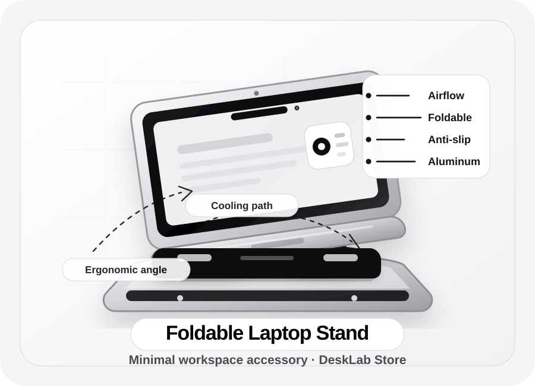

Scegli il prodotto
Guardi catalogo, prezzo indicativo, tempi e dettagli essenziali.
Preparing workspace essentials
Minimal store · fase validazione
Una selezione ridotta, sobria e controllata di prodotti per studio, lavoro e setup digitale. Prima verifichiamo disponibilità, qualità e tempi reali, poi procediamo con l’ordine.

Prodotto in evidenza
È il prodotto più coerente con DeskLab Store: utile, visibile, facile da spiegare e adatto a studenti, programmatori e persone che lavorano ogni giorno alla scrivania.
In questa fase non viene forzato nessun pagamento automatico: prima conferma disponibilità, tempi e condizioni.
Catalogo iniziale
I prodotti qui sotto sono pensati per un test controllato: basso rischio, peso contenuto, utilità chiara e margine verificabile.
Metodo d’acquisto
Questa prima versione non forza checkout automatici. Ogni ordine viene confermato manualmente: disponibilità, tempi, prezzo finale e condizioni devono essere chiari prima del pagamento.
Guardi catalogo, prezzo indicativo, tempi e dettagli essenziali.
Invii una richiesta via email con prodotto e quantità desiderata.
Controlliamo disponibilità, tempi reali, costo finale e condizioni.
Solo dopo conferma ricevi link pagamento o istruzioni d’ordine.
Metodo imprenditoriale
Margine reale = prezzo vendita − costo fornitore − spedizione − commissioni pagamento − buffer resi − costi fiscali/operativi.
Se il margine reale è debole, il prodotto non entra nel catalogo. Non basta “sembrare economico”: deve reggere spedizione, assistenza, resi e tempo operativo.Acquisto controllato
DeskLab Store parte come MVP prudente: pochi prodotti, informazioni chiare e conferma manuale prima del pagamento. L’obiettivo è validare interesse reale senza creare promesse finte o ordini ingestibili.
Prima di pagare viene controllata la disponibilità reale del prodotto e il tempo stimato di consegna.
Il prezzo indicativo diventa ordine solo dopo conferma di costo, spedizione e condizioni.
Il sito resta volutamente piccolo: meglio cinque prodotti verificabili che cento prodotti casuali.
Validazione v0.4
La prima metrica non è il fatturato: è capire se le persone capiscono il negozio, cliccano i prodotti e chiedono informazioni senza sentirsi davanti al solito dropshipping improvvisato.
Primo traffico minimo.
Interesse sui prodotti.
Contatti reali via email.
Solo dopo verifica completa.
Operativo v0.4
DeskLab Store non parte con un checkout automatico. Ogni richiesta viene verificata manualmente: prodotto, disponibilità, costo finale, tempi stimati e condizioni vengono controllati prima di chiedere un pagamento.
Il cliente invia prodotto, quantità e città di spedizione tramite email.
Prima di confermare l’ordine vengono verificati disponibilità, costo, spedizione e rischio reso.
Il pagamento viene richiesto solo dopo una conferma chiara di prezzo, tempi e condizioni.
Obiettivo iniziale: 100 visite, 10 interazioni prodotto, 3 richieste reali e 1 vendita sicura solo dopo verifica completa.
In questa fase il valore principale non è automatizzare: è capire quali prodotti interessano davvero e quali reggono numeri, tempi e fiducia.FAQ
In questa fase alcuni prodotti sono in validazione. Prima del pagamento viene sempre confermata disponibilità reale, prezzo finale e tempo stimato.
Perché questa è una versione MVP. Il carrello automatico ha senso dopo aver validato domanda, fornitori, tempi e qualità.
Le condizioni definitive saranno indicate prima dell’acquisto. Per vendite online verso consumatori nell’UE va considerato il diritto di recesso previsto dalla normativa applicabile.
No. È una baseline ordinata per partire: catalogo, richiesta ordine, test clienti, prime vendite controllate e successiva evoluzione verso e-commerce completo.
Contatti
Scrivi una richiesta chiara con nome prodotto, quantità e città di spedizione. Riceverai conferma prima di qualsiasi pagamento.